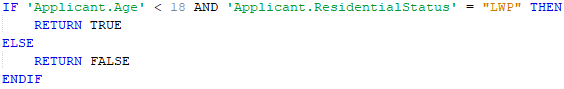
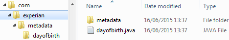

User Defined Functions
| Although available for selection in all PowerCurve products, the Semi Structured Data Definition component is only supported in PowerCurve Strategy Management and PowerCurve Originations. |
User Defined Functions allow a user to either create reusable scripts or functions or call and run code in an external Java program depending on the option chosen from the User Defined Function editor. Once created the User Defined Function can be selected when required from the Resources window and used within other scripting components including the User Defined Function.
|
Two specialised user defined functions called a Scoring Function and a Transformation Function are used within Scorecards. A third specialised user defined function called a User Defined Behavioural Function is available for Customer Management. |
|
|
The User Defined Function does not support empty value replacement. Therefore, empty values passed in as parameters to the User Defined Function will not be replaced by default values (or Custom Default Values). |
User Defined Functions can be written using either the:
- PowerCurve® Scripting option which may involve a simple one-line statement or a complex script involving any of the functions and operators that are available.
or the:
- Java option, which allows the user to call or run an external Java program providing advanced functionality that would not be provided by using the PowerCurve Scripting option alone.
User Defined Functions differ from Derived Data Scripts in that they use parameters for their inputs, not characteristics, and return a result; they do not necessarily output to a specified characteristic. Before a User Defined Function can be used, the user must define its parameters and return types and optionally the array size.
The following table lists the supported data types:
| Parameters | Return |
|---|---|
| Numeric | Numeric |
| String | String |
| Date | Date |
| Logical Data Model | Logical Data Model |
| - | Boolean |
Two types of parameters can be created in the User Defined Function, these are:
- Primitive parameters
- Logical Data Models
Primitive parameters have values assigned directly from the characteristics that are passed in from the calling context (e.g. a Derived Data Script).
Logical Data Model parameters do not have values assigned, but are given a reference to a location in the runtime structure that child characteristics can read or write their values from/to.
User Defined Functions can reference any of the parameters passed into the script and update data on them including whole Logical Data Models since the calling script provides the Logical Data Source reference to the parameter. The return functionality only supports simple use cases, however it can be used to return a dummy value/return code where the majority of the data updates are performed in the actual body of the script.
PowerCurve Scripting
Using the PowerCurve Scripting option, Working Storage Variables enable temporary storage of local data during the execution of the User Defined Function. They use the characteristic names that exist in the context of an existing Logical Data Model and can be passed as values of parameters to another User Defined Function.
When used inside of script, Working Storage Variables will call characteristic names that exist within the Logical Data Models referenced by these variables. These variables can then be used for storage of local data in the context of the script during the execution of the User Defined Function and/or passed as values to be used by another User Defined Function.
| Dynamic Array characteristics are supported for both User Defined Function input parameters and within the structure of a Logical Data Model, though the size of the Dynamic Array must have been defined prior to it being referenced. |
Function parameter and working storage names are case sensitive.
A User Defined Function can be a simple one-line script, or a more complex IF THEN ELSE construction for example, provided it returns a result. Both of the following examples are valid User Defined Functions:
| A User Defined Function called Square_Area which calculates the area of a square:RETURN ‘length’ * ‘length’ | |
|
|
A User Defined Function called CC_Min_Age_Check which validates that a credit card applicant is at least 21 years old: IF ‘Applicant_Age’ > 20 THEN RETURN 1 ELSE RETURN 0 ENDIF |
The user creates scripts by entering text into a script editor, using operators and functions (Operators and functions). The script editor displays parameter names, operators, command verbs, etc., in different colours. The script editor has basic text manipulation such as selecting blocks of text to cut, copy, paste and delete.
As the script must follow certain syntax rules there is an option to check the syntax of the script. For guidelines on some of the script syntax rules see Guidelines on script syntax.
The script syntax must be valid before any testing can be carried out.
When a User Defined Function is used in scripting, it is preceded by a $ to differentiate it from system built functions. The user function name is followed by parentheses enclosing the arguments to the function.
|
A User Defined Function called capincome which takes as input an income field would appear within a script as: 'capped_income' = $capincome('app_income'). |
For optimal script design it is recommended that:
- to index an array it is recommended that a primitive parameter or a local Working Storage Variable is used wherever possible. It is inefficient to pass a working Logical Data Model as a parameter in a call to the User Defined Function (e.g. from a Derived Data Script), solely for the purpose of indexing an array
- in loops, the SIZE of the array should be read first otherwise every time the loop condition is evaluated the array size will be read which may involve the navigation of a hierarchy.
|
For example, rather than: Do: ‘p1’ = SIZE (‘some char.child1.childArray’) |
Java option
Using the Java option, the user enters the fully qualified class path for the external Java program. Then, once the Generate Code icon is selected and a location defined, skeleton source code is created as well as a set of metadata classes and a template class using the parameters defined in the Function Parameters area of the editor. This skeleton source code and metadata classes can then be completed and compiled into a JAR file and called from a scripting component.
| User Defined Function parameters do not support characteristics that have been defined as Dynamic Array. However, Dynamic Array characteristics within the structure of a Logical Data Model parameter are supported. |
| Within the java code, the IDataInterfaceAccessor interface which supports dynamic arrays can be used. The developer can set the result size before populating the results into the dynamic array within their java code. |
A User Defined Function is defined by a script, using operators, functions, and values/constants.
As a first step, the user needs to define the input parameters (the arguments to the function). These are entered into the Function Parameters tab editor.
The Return parameter is required in every User Defined Function; the user can define the Return data type and array size, but cannot change the name.
The input parameters are defined by name, data type and optional array size.
Working Storage Variables can be created to enable temporary local data to be used for storage of local data during the execution of the User Defined Function and/or passed as values of parameters used by another User Defined Function. To be able to use a working storage variable in the script it must have been created in the Working Storage Variables tab.
Input parameters and local variables once they have been defined in the Function Parameters and Working Storage Variable tabs of the editor, will be listed in the Characteristic Chooser area of the editor from where the characteristics can be dragged and dropped into the script editor, typed in freehand or entered using auto-complete. Input parameter names and variable names are case sensitive; that is, the parameter or variable must be specified in the script exactly as it appears in the Function Parameters or Working Storage Variables tab. When used in the script, input parameters and local variables must be enclosed in single quotes.
A User Defined Function can be created from the Explorer window.
| You will only be able to add a component type that has been allowed for the selected folder. If it is not allowed it will not be listed and therefore cannot be selected. |
To create a User Defined Function
- From the Explorer window right click at the required folder level and select Add component.
- Select User Defined Function.
- In the Create component dialog enter the name of the User Defined Function.
- If you wish to have the new component display in the Main editor on creation, ensure that the Open new components in component editor tick box is selected.
- Click on the OK button.
The User Defined Function editor will open allowing you to script, compile and test the User Defined Function.
The User Defined Function name will be listed in the Explorer window under the selected folder level. The component is identified by the icon.
If you do not wish the editor to open, de-select the tick box. From the Explorer window select the User Defined Function and select Open.
To define a User Defined Function
- With the User Defined Function editor open, and the PowerCurve Scripting option and the Function Parameters tab selected, right click on the Return parameter and select Add Parameter.
- Type a name for the input parameter in the Parameter column.
- In the Type column select the parameter type you require (String, Numeric, Date or Logical Data Model).
| The Boolean type is currently only available for the Return parameter so cannot be selected when defining a new input parameter. |
- For parameters of either String, Numeric, Date or Boolean type, optionally specify an array size within the Array Size column.
- Repeat steps 1 to 4 to add the parameters you require.
|
Parameters created using the string, numeric, date or Boolean type will be listed within the Function Parameters Logical Data Source in the Characteristic Chooser editor. Parameters created using the Logical Data Model type, will be listed in the Characteristic Chooser area using the Parameter Name as the Logical Data Source and the contents of the Logical Data Model as the characteristics. Function Parameters Logical Data Sources are only visible inside the User Defined Function. |
To create a Working Storage Variable
- With the Working Storage Variables tab selected, right click on the Variable column header and select Add Variable.
- Type a name for the local variable.
- Click in the Logical Data Model cell and select the Logical Data Model that is required.
The variable name will be listed in the Characteristic Chooser area as the Logical Data Source with the contents of the Logical Data Model that was selected as the characteristics.
To define the script
- Either, in the script editor, add script freehand or drag the required resources from the Palette, Resources window into the script editor.
-
Segmentation functions can be used in User Defined Functions. For more information on using these see Adding Segmentation Functions to script.
- To add parameters or variables to the script that have been defined in the Function Parameters or Working Storage Variables tab, you can either type the parameters/variables into the script editor freehand, or you can use auto-complete to display the list of defined parameters/variables or drag and drop the characteristics you require into the editor.
- If you drag and drop an array characteristic into the script editor the software will automatically open the Select Characteristics Array Elements dialog.
- Specify the indices for a dynamic array.
- A User Defined Function can contain a simple one-line script or a more complex script involving constructs such as IF THEN ELSE and function calls and Boolean Expression. All will work provided the script returns a result. The following examples are valid User Defined Functions:
- Click on the Compile icon
 in the tool bar to check the script syntax.
in the tool bar to check the script syntax.
The system will provide you with information regarding the validity of the script. Details of any errors will be displayed to provide you with information so that you can correct them. - With the Properties window open, select the Intermediate Numeric property that you require. These options determine which numeric representation will be used when storing the intermediate results of the calculations during the runtime execution of the User Defined Function:
- Double - the default selection since the performance of Big Decimal calculations are considerably slower
- Big Decimal - needs to be used if precision is a required, for example when dealing with currency.
If you are working with calculations where the results could vary from 1000.0 to 0.001, and the calculation involved summing the difference, the magnitude would be so large that the 0.001 could be dropped from the results altogether if Double was used rather than Big Decimal.
| Remember, parameter names and variable names are case sensitive. |
|
Simple: |
|
|
|
One line, IF THEN ELSE statement: |
|
|
Using a Boolean Expression:  |

{kind=link}
{kind=link}
{kind=link}
{kind=link}
| You cannot test a User Defined Function using Tester unless the script is valid. |
The User Defined Function is now available for use within other scripting components.
A User Defined Functions that has been configured to use the Java option will call or run an external Java program.
Using the Java option, the user enters the fully qualified class path for the external Java program. Then, once the Generate Code icon is selected and a location defined, skeleton source code is created using the parameters defined in the Function Parameters area of the editor. This skeleton source code can then be completed and compiled into a JAR file and called from a Derived Data Script component.
A User Defined Function can be created from the Explorer window.
| You will only be able to add a component type that has been allowed for the selected folder. If it is not allowed it will not be listed and therefore cannot be selected. |
To create a User Defined Function
- From the Explorer window right click at the required folder level and select Add component.
- Select User Defined Function.
- In the Create component dialog enter the name of the User Defined Function.
- If you wish to have the new component display in the Main editor on creation, ensure that the Open new components in component editor tick box is selected.
- Click on the OK button.
The User Defined Function editor will open allowing you select the Java option to generate code that can be run or called using an external Java program.
The User Defined Function name will be listed in the Explorer window under the selected folder level. The component is identified by the icon.
If you do not wish the editor to open, de-select the tick box. From the Explorer window select the User Defined Function and select Open.
To define a User Defined Function to call or run an external Java program
- With the User Defined Function editor open, and the Java option selected, in the Function Parameters tab selected, right click on the Return parameter and select Add Parameter.
- Type a name for the input parameter in the "Parameter" column.
- In the "Type" column select the parameter type you require (String, Numeric, Date type or Logical Data Model).
- For parameters of either String, Numeric or Date Type, optionally specify an array size within the "Array Size" column.
- Repeat steps 1 to 4 to add the parameters you require.
| Avoid using Java reserved words (e.g. Class, String and int etc.) and other invalid identifiers such as those that do not start with an Alpha character (e.g. 9Name) within the definition of the User Defined Function and the Logical Data Model (e.g. parameter name, Logical Data Source characteristic name). Failure to do so will cause invalid Java code to be generated. |
- In the Fully Qualified Class Name field type the full class path of the Java program, e.g. com.experian.dayofbirth.
- Select the Generate Code icon
{kind=link}
| The name entered must be valid for the Generate Code icon to become active |
The software will open the Select Output Directory for Code Generation dialog.
- Select the directory where you wish the code to be placed once it has been generated, then click on the button.
The dialog will close, and place the generated code in the location selected.
Using the example described in step 6, the following Java file was generated and placed in the following path:
A metadata classes file will also be created and placed in the metadata folder. This skeleton code will need to be completed and compiled. - Complete the Java code and compile it.
{kind=link}
{kind=link}
The User Defined Function that uses the Java option can now be called from a Derived Data Script component, e.g. 'LDS.dayof birth' = $'dayofbirth' ('LDS.dateofbirth').
Editing a script involves entering the script content using the correct language and according to the correct syntax and grammar. Scripts can be edited, compiled and tested in a script editor.
See the topic Operators and functions for details of the operators, functions and statements that can be used in the script editor.
Segmentation functions can be used in User Defined Functions. For more information on using these see Adding Segmentation Functions to script.
To edit a User Defined Function
- With the User Defined Function editor open you can add script freehand; or using the required resources from the Resources window you can:
- Add an operator or function to a script
- Add a template to a script
- Click on the Compile Script button to check the script.
The User Defined Function can now be used within other components.
| Within scripting, User Defined Functions are referenced by using the user function name followed by parentheses enclosing the arguments to the function. The User Defined Function name is always proceeded by a $ symbol. |
|
A User Defined Function capincome which takes as input an income field would appear within a script as: 'capped_income' = $capincome('app_income') |
Single text items or contiguous strings of text items can be moved within a script using standard keyboard cut and paste facilities.
To move script item(s)
- The script must be open for editing.
- Highlight the required script item or string of items.
- Press Ctrl+X to cut the item(s).
- Click on the point in the script you wish to move to.
- Press Ctrl+V to paste.
The item will be moved.
Single text items or contiguous strings of text items can be deleted in a script using the delete button on the keyboard or the standard keyboard cut facility.
To delete script item(s)
- The script must be open for editing.
- Highlight the required script item or string of items.
- Press Delete on the keyboard, or press Ctrl+X.
The item or string of items will be deleted.
The user can test a User Defined Function either by manually typing in data for the input parameters referenced in the User Defined Function or by performing a test against a known data source. When a User Defined Function has been configured to call or run an external Java program then the JAR for the external program must be built and generated prior to testing. The following describes how to test/run the User Defined Function with an external call in:
- Interactive Tester
- Test Project/ Test Process Job
- Decision Agent Standalone
| Use “;” separator to add more than 1 JAR into the exec.path. For example: -Dexec.path=<directory>/<external-program1>.jar;<directory>/<external-program2>.jar |
Interactive Tester
Locate the relevant configuration file (<product>.conf conf file) for the product you have installed, for example:
- for Originations locate the ods.conf file in the following directory: PowerCurve\Originations\Originations Design Studio <version> ceds.conf file
- for Customer Management Design Studio cmds.conf file.
Add the following to the start-up options in the file using a text editor:
-J-Dexec.path=<directory>/<external-program>.jar
| default_options=--branding sds -J-Dexec.path "C:/Experian/PowerCurve/externalFile.jar" -J-Xms256m -J-Xmx768m -J-XX:PermSize=12 .... |
| Do not add spaces to the script since they will act as separators. If spaces are required encapsulate the line using double quotes |
Test Project/Test Process Job
Locate where the Job Server has been installed and right click on the run.bat file and select edit
Add the following to the start-up options using a text editor.
-Dexec.path=<directory>/<external-program>.jar
| java -Dexec.path=”C:/Experian/PowerCurve/externalFile.jar” -Xmx1024M -Dfile.encoding=UTF-8…. |
| Do not add spaces to the script since they will act as separators. If spaces are required encapsulate the line using double quotes |
DA Standalone
Add the following to the JVM options where the DA is being executed.
-Dexec.path=<directory>/<external-program>.jar
Once the user has successfully compiled a User Defined Function, the user will be able to test it using Interactive Tester.
The user can test a User Defined Function either by manually typing in data for the input parameters referenced in the User Defined Function or by performing a test against a known data source. When a User Defined Function has been configured to call or run an external Java program then the JAR for the external program must be built and generated prior to testing, see the run the User Defined Function with an external call topic for more information.
|
The following limitations exist on input data for primitive parameter values when testing User Defined Functions interactively. The limitations only apply for primitive parameters: if you have a User Defined Function with a Logical Data Model parameter and you need to specify values for string/numeric characteristics in the Logical Data Model, then the constraint is the logical definition of the characteristics in the Logical Data Model. The constraints apply for the primitive parameters because the logical definitions are not specified in the User Defined Function editor. When using a User Defined Function somewhere (for example, in a script) the characteristic values are passed in from the calling environment, where the logical definitions of the characteristics are specified in the enclosing data model. The maximum length of the input value that can be supplied for a string parameter is 9999 characters. The maximum number of digits that can be supplied for a numeric parameter is 29, including 14 decimal places, so the maximum number of digits before the decimal place is 15. |
To perform an interactive test
To test a user defined function manually by entering data into the relevant fields for the input characteristics, use the Interactive Tester.